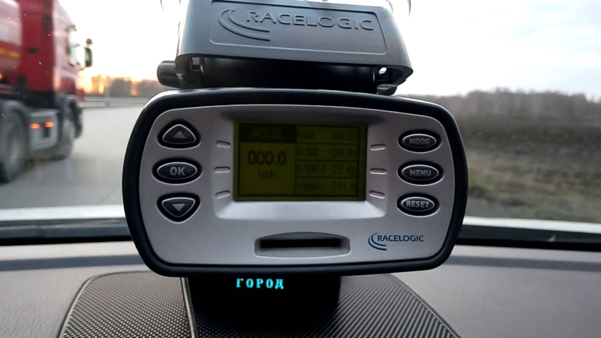

ООО "ЛУКОЙЛ-Пермнефтеоргсинтез" (ОКПО:00148636)
Организация ООО "ЛУКОЙЛ-Пермнефтеоргсинтез"
Общие сведения: Дерево связей На карте Отчетность
Полное юридическое наименование: ОБЩЕСТВО С ОГРАНИЧЕННОЙ ОТВЕТСТВЕННОСТЬЮ "ЛУКОЙЛ-ПЕРМНЕФТЕОРГСИНТЕЗ"
Руководитель: ГЕНЕРАЛЬНЫЙ ДИРЕКТОР Андронов Сергей Михайлович ИНН / КПП: 5905099475 / 590501001 Уставной капитал: 270.644 млн. руб. Численность персонала: 3401 Количество учредителей: 1 Дата регистрации: 21.11.2002 Статус: Действующее Контактная информация:Индекс: 614055
Адрес: Г ПЕРМЬ,УЛ ПРОМЫШЛЕННАЯ 84
GPS координаты: 57.922688,56.13883
Юридический адрес: 614055, ПЕРМСКИЙ КРАЙ, ГОРОД ПЕРМЬ, УЛИЦА ПРОМЫШЛЕННАЯ, 84
Телефон: 8 (342) 220-24-67 , 8 (342) 220-22-22
Факс: 220-22-88
E-mail: lukpnos@pnos.lukoil.com
Сайт: www.lukoil.ru
Реквизиты компании:
ИНН: 5905099475
КПП: 590501001
ОКПО: 00148636
ОГРН: 1025901216571
ОКФС: 16 - Частная собственность
ОКОГУ: 4100615 - Публичное акционерное общество "Нефтяная компания "ЛУКОЙЛ"
ОКОПФ: 12300 - Общества с ограниченной ответственностью
ОКТМО: 57701000001
ОКАТО: 57401367 - Индустриальный, Пермь, Города краевого значения Пермского края, Пермский край
Предприятия рядом: ООО "ПГС" , ООО "ДЕККА" , ООО "ПКК-ТРАНС" , ООО "ПРЕДПРИЯТИЕ "АЛЕКСИЙ" - Посмотреть все на карте
Правопредшественники: Наименование ИНН ОГРН ООО "Воламик Констракшн" 5905292415 1125905005907 ООО "Воламик Энерджи" 5905297950 1135905003024 ООО "ЛУКОЙЛ-Пермнефтегазпереработка" 5948019869 1025902395090
Виды деятельности:
Основной (по коду ОКВЭД ред.2): 19.20 - Производство нефтепродуктов
Найти похожие предприятия - в той же отрасли и регионе (с тем же ОКВЭД и ОКАТО)
Дополнительные виды деятельности по ОКВЭД:
20.11 Производство промышленных газов 20.14 Производство прочих основных органических химических веществ 35.11 Производство электроэнергии 35.13 Распределение электроэнергии 35.30.1 Производство пара и горячей воды (тепловой энергии) 37.00 Сбор и обработка сточных вод 41.20 Строительство жилых и нежилых зданий 43.21 Производство электромонтажных работ 46.1 Торговля оптовая за вознаграждение или на договорной основе 46.12 Деятельность агентов по оптовой торговле топливом, рудами, металлами и химическими веществами 46.71 Торговля оптовая твердым, жидким и газообразным топливом и подобными продуктами 46.71.1 Торговля оптовая твердым топливом 46.71.2 Торговля оптовая моторным топливом, включая авиационный бензин 46.77 Торговля оптовая отходами и ломом 49.41.2 Перевозка грузов неспециализированными автотранспортными средствами 52.10.2 Хранение и складирование жидких или газообразных грузов 52.10.21 Хранение и складирование нефти и продуктов ее переработки 52.10.9 Хранение и складирование прочих грузов 52.24 Транспортная обработка грузов 52.29 Деятельность вспомогательная прочая, связанная с перевозками 68.20.2 Аренда и управление собственным или арендованным нежилым недвижимым имуществом 71.20.1 Испытания и анализ состава и чистоты материалов и веществ: анализ химических и биологических свойств материалов и веществ; испытания и анализ в области гигиены питания, включая ветеринарный контроль и контроль за производством продуктов питания 71.20.8 Сертификация продукции, услуг и организаций 71.20.9 Деятельность по техническому контролю, испытаниям и анализу прочая 72.19 Научные исследования и разработки в области естественных и технических наук прочие 73.20.1 Исследование конъюнктуры рынкаУчредители: Наименование ИНН Доля Сумма ПАО "ЛУКОЙЛ" (ОКПО:00044434) . 7708004767 100% 270.644 млн. руб. ...показать исторические данные...
Является или была в прошлом учредителем следующих организаций: Дата Наименование ИНН Доля Сумма 23.09.2019 ТСЖ "Шоссе Космонавтов, дом 141" 5905251521 05.07.2018 ТСЖ "РАДУГА 34" 5948031680 14.02.2018 ТСЖ "ДЕКАБРИСТОВ, 2" 5905254138 03.02.2018 НП "КЛУБ ПРОМЫШЛЕННИКОВ И ФИНАНСИСТОВ "СТРОГАНОВСКИЙ" 5905011985 22.02.2017 ЗАО "БАЛТИК ПЕТРОЛЕУМ" 7803032637 222.4 тыс. руб. 21.02.2017 ООО "Воламик Энерджи" 5905297950 99.99% 109.989 тыс. руб. ...показать все...
Регистрация в Пенсионном фонде Российской Федерации:
Регистрационный номер: 069008001666
Дата регистрации: 15.07.1993
Наименование органа ПФР: Управление Пенсионного фонда Российской Федерации (государственное учреждение) в Индустриальном районе г. Перми
ГРН внесения в ЕГРЮЛ записи: 2075905059855
Дата внесения в ЕГРЮЛ записи: 30.06.2007
Регистрация в Фонде социального страхования Российской Федерации:Регистрационный номер: 590014014459001
Дата регистрации: 14.10.1994
Наименование органа ФСС: Государственное учреждение - Пермское региональное отделение Фонда социального страхования Российской Федерации
ГРН внесения в ЕГРЮЛ записи: 2165958634719
Дата внесения в ЕГРЮЛ записи: 20.06.2016
По данным rkn.gov.ru от 25.09.2020 по ИНН компания состоит в реестре операторов, осуществляющих обработку персональных данных:
Регистрационный номер: 09-0075679
Дата внесения оператора в реестр: 17.12.2009
Основание внесения оператора в реестр (номер приказа): 661
Адрес местонахождения оператора: 614055, г. Пермь, ул. Промышленная, д. 84
Дата начала обработки персональных данных: 22.11.2007
Субъекты РФ, на территории которых происходит обработка персональных данных: Пермский край
Цель обработки персональных данных: исполнения условий трудовых договоров с работниками общества, исполнения условий договоров с подрядными организациями, выполнения условий коллективного договора, обеспечения сохранности имущества, пропускного и внутриобъектового режима, администрирования и технической поддержки информационных систем в административных зданиях Компании и Общества
подробнееОписание мер, предусмотренных ст. 18.1 и 19 Закона: Организационные меры для защиты от неправомерного или случайного доступа, уничтожения, изменения, блокирования, копирования, распространения персональных данных, в т.ч.: требования к защите определены в положении о защите персональных данных ООО «ЛУКОЙЛ-Пермнефтеоргсинтез», определен круг лиц, допущенных к обработке персональных данных, в договорах с подрядными организациями устанавливаются требования к защите персональных данных, реализация разрешительной системы допуска пользователей (обслуживающего персонала) к информационным ресурсам, информационной системе и связанным с ее использованием работам, документам, ограничение доступа пользователей в помещения, где размещены технические средства, позволяющие осуществлять обработку персональных данных, а также хранятся носители информации, разграничение доступа пользователей и обслуживающего персонала к информационным ресурсам
Категории персональных данных: биометрические персональные данные,фамилия, имя, отчество,год рождения,месяц рождения,дата рождения,место рождения,адрес,семейное положение,образование,профессия,доходы, состав семьи, повышение квалификации, гражданство, серия и номер паспорта, идентификационный номер налогоплательщика, номер полиса ОМС, номер свидетельства обязательного пенсионного страхования, контактные телефоны (мобильный, домашний, рабочий), адрес электронной почты, реквизиты банковских счетов работников, сведения о наличии оружия
Категории субъектов, персональные данные которых обрабатываются: работникам, состоящим в трудовых отношениях с ООО «ЛУКОЙЛ-Пермнефтеоргсинтез», работникам подрядных организаций, осуществляющих производство работ на территории объектов ООО «ЛУКОЙЛ-Пермнефтеоргсинтез», субъектам, состоящим в договорных отношениях с ООО «ЛУКОЙЛ-Пермнефтеоргсинтез», учредителям (члены органов управления учредителей), обладателям долей в уставном капитале, физическим лицам, состоящим в договорных и иных гражданско-правовых отношениях с Обществом, членам семей работников, кандидатам на вакантные должности, бывшим работникам, посетителям
Перечень действий с персональными данными: осуществляется сбор, ввод, чтение, поиск, модификация, уничтожение, передача (распространение),
Обработка персональных данных: с передачей по внутренней сети юридического лица,без передачи по сети Интернет,смешанная
Правовое основание обработки персональных данных: Федеральным законом Российской федерации «О персональных данных», Гражданским кодексом Российской Федерации, Трудовым Кодексом Российской Федерации, Налоговым кодексом Российской Федерации, согласием субъектов на обработку ПДн в письменной форме, согласием субъектов в письменной форме на включение персональных данных в общедоступные источники
Наличие трансграничной передачи: нет
Сведения о местонахождении базы данных: не указано
Результаты работы за 2019 год (по данным ФНС России): Посмотреть данные за все года Финансовые отчеты (бухгалтерские показатели): Код Показатель Значение Ед.изм. Ф1.1110 Нематериальные активы 354868 тыс. руб. Ф1.1120 Результаты исследований и разработок 36624 тыс. руб. Ф1.1130 Нематериальные поисковые активы 0 тыс. руб. Ф1.1140 Материальные поисковые активы 0 тыс. руб. Ф1.1150 Основные средства 47210600 тыс. руб. Ф1.1160 Доходные вложения в материальные ценности 0 тыс. руб. Ф1.1170 Финансовые вложения 0 тыс. руб. Ф1.1180 Отложенные налоговые активы 353917 тыс. руб. Ф1.1190 Прочие внеоборотные активы 5740480 тыс. руб. Ф1.1100 Итого по разделу I - Внеоборотные активы 53696500 тыс. руб. Ф1.1210 Запасы 16981400 тыс. руб. Ф1.1220 Налог на добавленную стоимость по приобретенным ценностям 2612730 тыс. руб. Ф1.1230 Дебиторская задолженность 43353800 тыс. руб. Ф1.1240 Финансовые вложения (за исключением денежных эквивалентов) 65134300 тыс. руб. Ф1.1250 Денежные средства и денежные эквиваленты 164 тыс. руб. Ф1.1260 Прочие оборотные активы 223852 тыс. руб. Ф1.1200 Итого по разделу II - Оборотные активы 128306000 тыс. руб. Ф1.1600 БАЛАНС (актив) 182003000 тыс. руб. Ф1.1310 Уставный капитал (складочный капитал, уставный фонд, вклады товарищей) 270644 тыс. руб. Ф1.1320 Собственные акции, выкупленные у акционеров 0 тыс. руб. Ф1.1340 Переоценка внеоборотных активов 303082 тыс. руб. Ф1.1350 Добавочный капитал (без переоценки) 0 тыс. руб. Ф1.1360 Резервный капитал 40596 тыс. руб. Ф1.1370 Нераспределенная прибыль (непокрытый убыток) 112293000 тыс. руб. Ф1.1300 Итого по разделу III - Капитал и резервы 112907000 тыс. руб. Ф1.1410 Заемные средства 0 тыс. руб. Ф1.1420 Отложенные налоговые обязательства 4118920 тыс. руб. Ф1.1430 Оценочные обязательства 0 тыс. руб. Ф1.1450 Прочие обязательства 54587 тыс. руб. Ф1.1400 Итого по разделу IV - Долгосрочные обязательства 4173510 тыс. руб. Ф1.1510 Заемные средства 0 тыс. руб. Ф1.1520 Кредиторская задолженность 64290400 тыс. руб. Ф1.1530 Доходы будущих периодов 76631 тыс. руб. Ф1.1540 Оценочные обязательства 555059 тыс. руб. Ф1.1550 Прочие обязательства 0 тыс. руб. Ф1.1500 Итого по разделу V - Краткосрочные обязательства 64922100 тыс. руб. Ф1.1700 БАЛАНС (пассив) 182003000 тыс. руб. Ф2.2110 Выручка 390791000 тыс. руб. Ф2.2120 Себестоимость продаж 306142000 тыс. руб. Ф2.2100 Валовая прибыль (убыток) 84649000 тыс. руб. Ф2.2210 Коммерческие расходы 34247200 тыс. руб. Ф2.2220 Управленческие расходы 1060070 тыс. руб. Ф2.2200 Прибыль (убыток) от продаж 49341700 тыс. руб. Ф2.2310 Доходы от участия в других организациях 0 тыс. руб. Ф2.2320 Проценты к получению 3739840 тыс. руб. Ф2.2330 Проценты к уплате 0 тыс. руб. Ф2.2340 Прочие доходы 490984 тыс. руб. Ф2.2350 Прочие расходы 3292550 тыс. руб. Ф2.2300 Прибыль (убыток) до налогообложения 50280000 тыс. руб. Ф2.2410 Текущий налог на прибыль 9412570 тыс. руб. Ф2.2421 в т.ч. постоянные налоговые обязательства (активы) 385969 тыс. руб. Ф2.2430 Изменение отложенных налоговых обязательств -111142 тыс. руб. Ф2.2450 Изменение отложенных налоговых активов -88628 тыс. руб. Ф2.2460 Прочее 220045 тыс. руб. Ф2.2400 Чистая прибыль (убыток) 40887700 тыс. руб. Ф2.2510 Результат от переоценки внеобор.активов, не включ.в чистую прибыль(убыток) периода 0 тыс. руб. Ф2.2520 Результат от прочих операций, не включаемый в чистую прибыль (убыток) периода 0 тыс. руб. Ф2.2500 Совокупный финансовый результат периода 40887700 тыс. руб. Ф3.3600 Чистые активы 112984000 тыс. руб. Посмотреть отчетность за 2009 - 2019 год.
Лицензии: Номер Дата Виды деятельности Место действия (59) - 7313 - У 14.02.2019 - 18.02.2119 Деятельность по сбору, транспортированию, обработке, утилизации, обезвреживанию, размещению отходов I - IV классов опасности АВ ВО-03-209-3088 07.04.2016 - 07.04.2021 РАЗМЕЩЕНИЕ, СООРУЖЕНИЕ, ЭКСПЛУАТАЦИЯ И ВЫВОД ИЗ ЭКСПЛУАТАЦИИ ЯДЕРНЫХ УСТАНОВОК, РАДИАЦИОННЫХ ИСТОЧНИКОВ И ПУНКТОВ ХРАНЕНИЯ ЯДЕРНЫХ МАТЕРИАЛОВ И РАДИОАКТИВНЫХ ВЕЩЕСТВ, ХРАНИЛИЩ РАДИОАКТИВНЫХ ОТХОДОВ ПЕМ 02569 ВЭ 07.09.2015 - 01.10.2027 РАЗВЕДКА И ДОБЫЧА ПОЛЕЗНЫХ ИСКОПАЕМЫХ, В ТОМ ЧИСЛЕ ИСПОЛЬЗОВАНИЕ ОТХОДОВ ГОРНОДОБЫВАЮЩЕГО И СВЯЗАННЫХ С НИМ ПЕРЕРАБАТЫВАЮЩИХ ПРОИЗВОДСТВ Показать все... Госзакупки: Арбитраж: Сертификаты соответствия: Исполнительные производства:
Краткая справка:
Организация 'ОБЩЕСТВО С ОГРАНИЧЕННОЙ ОТВЕТСТВЕННОСТЬЮ "ЛУКОЙЛ-ПЕРМНЕФТЕОРГСИНТЕЗ"' зарегистрирована 21 ноября 2002 года по адресу 614055, ПЕРМСКИЙ КРАЙ, ГОРОД ПЕРМЬ, УЛИЦА ПРОМЫШЛЕННАЯ, 84. Компании был присвоен ОГРН 1025901216571 и выдан ИНН 5905099475. Основным видом деятельности является производство нефтепродуктов. Компанию возглавляет АНДРОНОВ СЕРГЕЙ МИХАЙЛОВИЧ. За 2019 год прибыль компании составила 40887.7 млн.руб.
Добавить организацию в сравнение Поиск по ИНН Поиск по ОГРН Поиск по ОКПО Поиск по телефону Поиск по наименованию Поиск по руководителю Поиск по адресу Поиск предпринимателейСписок по регионам (ОКАТО) Список по отраслям (ОКВЭД) Список предпринимателей © OpenStreetMap
История изменений данных в карточке. Для внесения изменений в данную страницу необходимо отправить запрос
Основные данные о компании получены из Федеральной налоговой службы (ЕГРЮЛ)
Страница не является официальным сайтом компании. Информация носит ознакомительный характер, собрана из открытых источников, и может быть неточной и устаревшей. При копировании материалов гиперссылка на www.list-org.com обязательна. Мы используем метаданные пользователя (cookie, данные об ip-адресе) для функционирования сайта. Если вы не хотите, чтобы эти ваши данные обрабатывались, то вам следует покинуть сайт.
